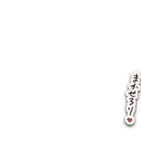
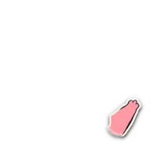

じゃあ、ユニちゃんがよい気分を保てゆと思う見方を発表すゆでしゅ。
ヨロw


その親友ちゃんも、じぶんと同じく神なのでしゅ！
だから偶像崇拝も、神の体験なのでしゅ！
まちがいや正解があゆんじゃなくて、ぜんぶ「神の遊び」！
ゆってみれば、データ収集をとおちた神自身の拡大に貢献ちてゆのでしゅ、みんなで！
だから善も悪もなく、なんでもOKのただひとつの善ちかない…
このひとつきりの善が「愛」で、神の本性なのでしゅ！😁ドヤ!!
だから偶像崇拝も、神の体験なのでしゅ！
まちがいや正解があゆんじゃなくて、ぜんぶ「神の遊び」！
ゆってみれば、データ収集をとおちた神自身の拡大に貢献ちてゆのでしゅ、みんなで！
だから善も悪もなく、なんでもOKのただひとつの善ちかない…
このひとつきりの善が「愛」で、神の本性なのでしゅ！😁ドヤ!!